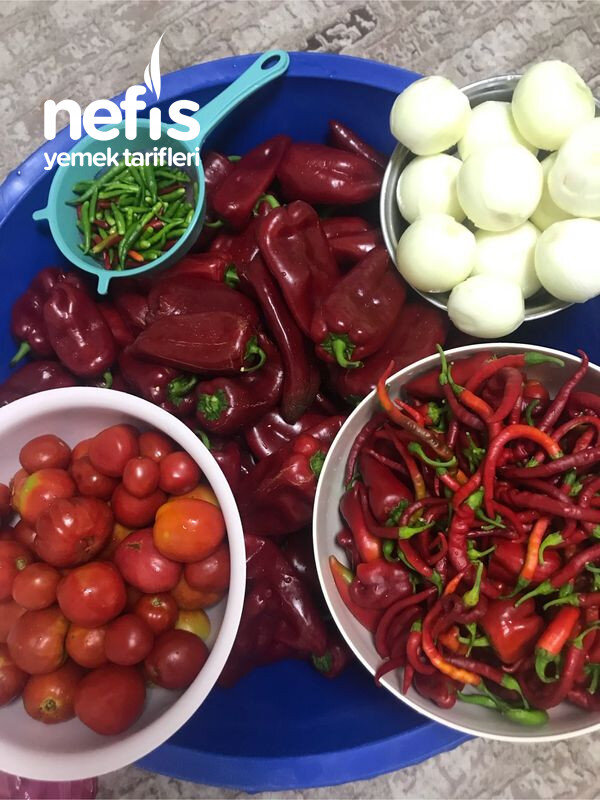

🍽️ 12-14 kişilik⏱️ Hazırlık: 50 dk🔥 Pişirme: 3 sa🏷️ Diğer Tarifler🏷️ Kış Hazırlıkları
Malzemeler
- 15 kg sarı un
- 2 kg soğan
- 2 kg domates
- 16 kg kırmızı kapya biber
- Yarım kg acı süs biberi (İsteğe bağlı)
- 3 demet nane
- 700 gram haşlanmış nohut
- 2-2, 5 kg yoğurttan yapılan süzme yoğurt (1 kg kadar kalıyor)
- Tuz
Hazırlanışı
- Önce nohudu ıslatıyoruz. Bütün malzemeleri yıkıyoruz.
- Önce soğanları 4-6 parçaya bölerek fırına attım. Biraz suyunu çekene kadar.
- Domatesleri doğrayıp tencereye koyarak pişirmeye başladım.
- Bu arada kırmızı biberleri de doğramaya başladım.
- Hafif közlenmiş soğanları ve acı biberleri domateslerin üzerine ilave ettim.
- Kırmızı biberleri de fırında hafif közleyerek domateslerle karıştırmaya devam ettim.
- Bütün biberler bu şekilde közlendikçe tencereye ilave ettim. Naneleri ve tuz da ilave ettim. Sık sık karıştırdım.
- Közlenirken suyu biraz gittiği için fazla su salmadı. Nohutuda pişirdim.
- Sabah olunca akşamdan pişirdiğim nohutları blenderden geçirdim.
- Şimdi de yoğurma işine başlıyoruz. Unu leğene alıyoruz (Gerekirse biraz daha un ilave edebiliriz).
- Nohudu, yoğurdu, 15 kaşık kadar tuzu, biberli harcımızı ilave ederek tarhanamızı yoğuruyoruz. Üzerine temiz sofra bezi örtüyoruz.
- 15 -20 gün boyunca hergün yoğuruyoruz(günde iki kez yoğurdum. Üzerindeki bezi ıslandıkça değiştiriyoruz.
- Sonrasında, rüzgar alan bir yerde temiz sofra bezinin üzerine parçalar kopararak tarhanamızı döküyoruz.
- Sık sık alt üst ederek parçaları biraz daha bölerek küçültüyoruz. Kıvama gelince ovarak kalburdan geçiriyoruz (Robottan geçirerek de kalburdan eleyebiliriz).
- Biberlerin kabukları ve çekirdekler kalana kadar ovma veya robottan geçirip kalburdan geçirme işlemine devam ediyoruz.
- Temiz sofra bezine sererek sık sık karıştırarak bir süre iyice kurumasını sağlıyoruz.
- Avucumuzla sıktığımızda topaklanmayıp kum gibi aktığında olmuş demektir.
- Tercihen bez torbalarda veya cam kavanozlarda saklamalıyız. Kışın soğuk günlerinde nefis, sağlıklı çorbalığımız hazır. Güzel, sağlıklı günlerde tüketmek dileğiyle. Afiyet olsun 😊.